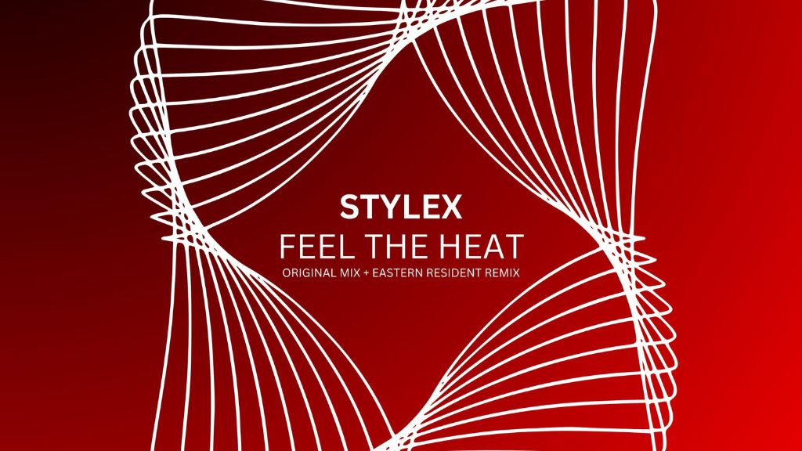

STYLEX Brings Dance Floors to Life with His Unique Tech House Energy

The following feature is now included in our online magazine which is also available in print.
Issue #4
Online Magazine | Print MagazineFor more details contact us at: volechomag@gmail.com
With so much talent on the scene, it has not taken long before STYLEX emerged on the radar as one of the artists to watch in house and tech house. Merging inspiration from genre icons such as Carl Cox with the sleek, contemporary production of Martin Ikin, he brings the fire with his lively live shows, catchy basslines, and thrusting beats. Combine inspiration from influencers such as James Hurr, Mark Knight, and Jewel Kid, and what you have is a sound both familiar and uncompromisingly energetic, a signature sound that is certain to take hold from the initial beat.
STYLEX's studio work illustrates acute sensitivity to rhythm and melody, and the capacity to create tracks ready to feature on the club floor yet emotionally engaging. Early singles such as Got This and Bandolera on Mustache Crew Records stamped him as a producer who could weave catchy hooks with driving energy, and Corrupt on AK Cartel further deepened his repertoire. His vocal-driven single Falling Deep on G Mafia Records uncovered a less typical side, injecting emotional richness otherwise delivered only by punchy, percussive beats.
His new release, Feel The Heat on Krafted Digital, is an optimal-impact tech house peak-hour floor-filler. Every synth stab, every percussive strike, and every cyclical bassline is programmed with one intention only to get a crowd moving, so standing still is out of the question. There is a cinematic aspect to the production, too, evoking memories of Hakkasan frequent flyers' high-octane performances but infused with STYLEX's own unique stamp, so repeat plays are mandatory. The set is reminiscent of a conversation between the dance floor and the booth, an unspoken recognition that the energy is reciprocated, not coerced.
STYLEX is also a master behind the decks. As host of Data Transmission Radio's Tech House Unleashed show, he previews his sets that reveal sharp ears and deep respect for the genre's heritage. His live sets are captivating, with seamless segues, witty layering, and an emphasis on feeling the room. While his DJing is only three years old, he possesses the composure and maturity of a seasoned pro with him, exuding confidence while still being in touch with the crowd.
For those who want more of his sound, Feel The Heat is sitting easily in the same place as Martin Ikin's Hooked or Jewel Kid's Bangs, offering an equally frantic, club-oriented experience. Those familiar with Carl Cox's early days of festival anthems or Mark Knight's floor-smashing tech house will hear the familiar nods of STYLEX's production style, but his music is also fresh and uncompromising in its own right. Aside from tracks and concerts, his work is the crowd high of electronic music — the sensation of dancing in masses to a beat that will not let you sit down.
STYLEX persists as an evolving force, marrying rush-hour choruses with moments of vocal declaration and melodic suspense. His rise in recent years portends a career that could define global dance floors, not just as a DJ or producer, but as one voice with a vision. With each release, he stakes his claim to being an artist that understands both the technical and emotional potential of electronic music, and makes it impossible to turn away from what's coming next.
Follow Our Playlist For More Music!
This dispatch was last updated on October 6, 2025